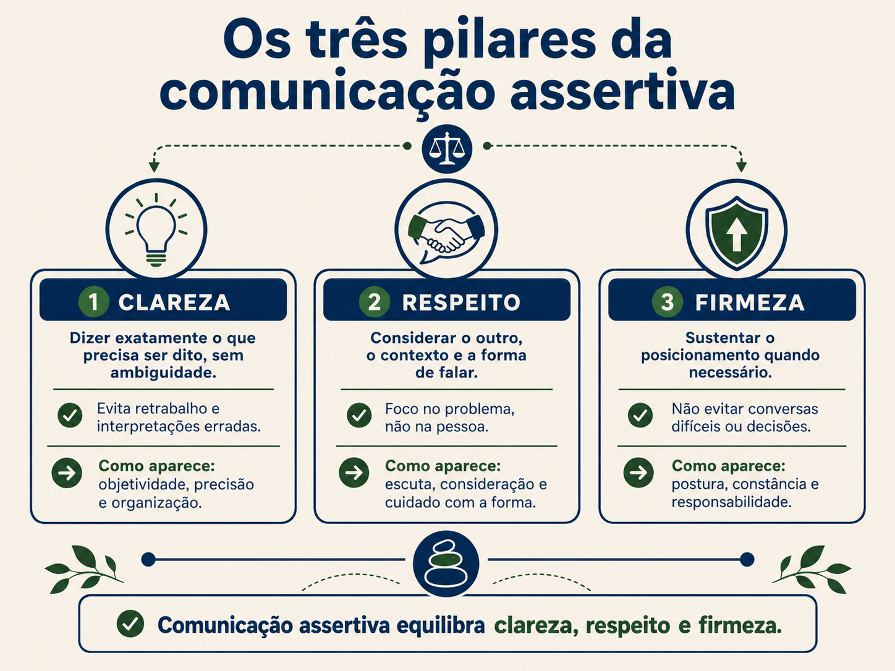
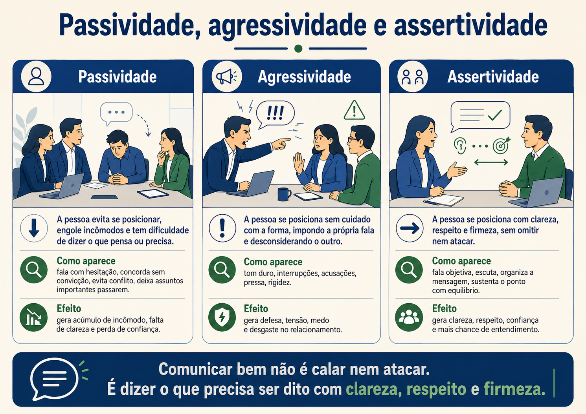

Escuta, empatia e confiança
Uma conversa sobre ouvir de verdade, perguntar melhor e criar um ambiente em que as pessoas consigam falar antes que o problema cresça.
Bom dia, pessoal. Pensa em uma cena simples. Uma pessoa chega para falar com alguém da liderança e começa a explicar uma dificuldade. Enquanto ela fala, a outra pessoa continua digitando, olhando a tela e respondendo apenas com um “aham”. No fim, talvez até diga: pode falar, estou ouvindo. Mas quem está falando sente que não está sendo ouvido de verdade.
Ouvir e escutar não são a mesma coisa. Ouvir é captar som. Escutar exige atenção. Uma porta batendo, um carro passando na rua, uma notificação chegando no celular, tudo isso a gente ouve. Escutar é outra coisa. Escutar é colocar presença na fala do outro e tentar entender o conteúdo, o sentimento e o contexto.
Para que serve a escuta ativa na liderança? Serve para reduzir erro de interpretação, criar confiança e descobrir problemas antes que eles virem crise. Muitas vezes a pessoa não traz o problema todo na primeira frase. Ela começa pela borda. Se a liderança interrompe, julga ou responde rápido demais, o assunto real não aparece.
Como usar escuta ativa? Primeiro, pare o que está fazendo quando a conversa for importante. Segundo, demonstre que está acompanhando. Terceiro, confirme o entendimento com suas palavras. Quarto, faça perguntas abertas. Pergunta aberta é aquela que convida a pessoa a explicar, não apenas responder sim ou não.
Não. Escutar não é concordar. Essa diferença é essencial. Empatia também não é concordância. Empatia é conseguir entender o ponto de vista do outro. Concordância é aceitar aquele ponto de vista como correto. Um líder pode dizer: eu entendo sua preocupação, e depois completar: mesmo assim, precisamos seguir por este caminho por causa do impacto no cliente.
Existem níveis de escuta. No nível mais superficial, a pessoa ouve só para responder. Enquanto o outro fala, ela já monta a defesa, a solução ou a crítica. No nível seletivo, ela escuta apenas o que confirma aquilo que já pensava. No nível atento, ela entende o conteúdo. No nível empático, ela entende também o contexto e o sentimento por trás do conteúdo.

Vamos trazer isso para um exemplo. Uma pessoa do time diz: eu não vou conseguir entregar isso hoje. A escuta superficial responde rápido: então você precisa se organizar melhor. A escuta seletiva pensa: eu sabia que essa pessoa não era confiável. A escuta atenta pergunta: qual parte não ficou pronta? A escuta empática pergunta: o que aconteceu, qual é o bloqueio e que alternativa temos para reduzir o impacto?
Perceba que a escuta empática não passa a mão na cabeça. Ela entende melhor para decidir melhor. Às vezes, o problema é falta de prioridade. Às vezes, é dependência de outra área. Às vezes, é excesso de demanda. Às vezes, é dificuldade técnica. A mesma frase pode esconder causas diferentes.
Empatia, então, é a capacidade de considerar o contexto humano sem abandonar a responsabilidade. A pessoa pode estar passando por uma dificuldade pessoal, pode estar cansada, pode ter tido um problema familiar, pode estar insegura com uma tarefa. Isso precisa ser considerado. Mas considerar não significa aceitar qualquer comportamento sem ajuste.
Um líder maduro consegue equilibrar sensibilidade e firmeza. Sensibilidade para perceber que existe uma pessoa por trás da entrega. Firmeza para manter o combinado, o respeito ao time e o cuidado com o cliente. O erro seria cair em um dos extremos: ou tratar tudo com dureza, como se pessoas fossem máquinas, ou tratar tudo com permissividade, como se contexto anulasse responsabilidade.
Empatia entende o contexto.
Concordância valida a opinião.
Liderança precisa de empatia com critério.

Agora entram as perguntas poderosas. O nome parece grande, mas a ideia é simples. Pergunta poderosa é aquela que ajuda a pessoa a pensar melhor. Ela não serve para encurralar. Serve para ampliar a visão. Em vez de dar uma ordem imediatamente, o líder faz uma pergunta que ajuda a pessoa a enxergar causa, impacto, alternativa e próximo passo.
Por exemplo: o que está dificultando esse avanço? Qual é o risco se nada for feito? Que apoio você precisa? Qual seria o próximo passo mais seguro? O que você já tentou? Quem precisa ser envolvido? Essas perguntas mudam a conversa, porque tiram o foco da reclamação solta e levam para análise e ação.
Perguntas fechadas também têm lugar. Pergunta fechada é aquela que geralmente recebe sim, não ou uma resposta curta. Ela serve quando precisamos confirmar algo. Você enviou o relatório? O cliente aprovou? O prazo mudou? Mas, quando queremos entender melhor, a pergunta aberta costuma funcionar melhor.
A construção de relacionamento também aparece nas perguntas simples do dia a dia. Perguntar como a pessoa está, lembrar de algo que ela comentou, chamar pelo nome, demonstrar interesse real, tudo isso cria vínculo. Não precisa virar invasão de privacidade. O ponto é reconhecer a pessoa, não apenas a função que ela ocupa.
Chamar a pessoa pelo nome parece pequeno, mas tem força. O nome individualiza a relação. Quando alguém diz “Renata, entendo o seu ponto”, a fala chega diferente de “entendo o ponto da área”. O cuidado é não repetir o nome de forma mecânica, como técnica artificial. O nome precisa entrar com naturalidade.
Depois da pausa, vamos olhar para confiança. Confiança não nasce de uma frase bonita. Ela nasce de repetição. A equipe observa se a liderança escuta de verdade, se guarda confidencialidade quando precisa, se não ridiculariza dúvidas, se não pune a pessoa por trazer risco, se reconhece quando erra e se mantém coerente entre fala e prática.
Ambiente de segurança é um ambiente em que as pessoas conseguem falar sobre problemas sem medo de humilhação. Isso não significa ausência de cobrança. Significa que o problema pode aparecer enquanto ainda dá tempo de resolver. Se a equipe esconde risco, a liderança recebe notícia tarde demais. Se a equipe confia, os problemas aparecem antes.
No trabalho remoto, isso fica ainda mais importante. Quando cada pessoa está em um lugar, muita coisa se perde. A liderança não vê o corredor, não percebe o clima da sala, não nota uma expressão de cansaço com tanta facilidade. Por isso, precisa criar rituais simples de conversa, perguntas melhores e espaços de abertura.
Também apareceu na capacitação uma reflexão sobre marketing pessoal. Marketing pessoal não é fingir ser quem não é. É saber se apresentar, mostrar o que faz, comunicar contribuição e não ficar invisível. Uma pessoa pode trabalhar muito e, mesmo assim, se comunicar pouco. Nesse caso, a liderança pode não enxergar o esforço, o cliente pode não entender o valor e o time pode não saber onde ela está ajudando.
Sair da zona de conforto não significa virar uma pessoa expansiva de repente. Significa dar pequenos passos para participar melhor. Pode ser fazer uma pergunta em uma reunião, registrar um ponto no chat, apresentar uma entrega com mais clareza, pedir feedback ou se voluntariar para explicar um tema que domina.
Escuta ativa ajuda também quem é mais tímido. Uma pessoa que tem dificuldade de se expor tende a falar melhor quando percebe que não será interrompida ou julgada de imediato. A liderança pode ajudar criando perguntas mais abertas e dando tempo para a pessoa pensar.
Perguntas poderosas, use como repertório de conversa. Uma boa pergunta pode abrir mais caminho do que uma ordem dada no impulso.
Existe outro ponto importante: escutar não é apenas esperar a pessoa terminar para falar a sua solução. Muitas vezes, enquanto o outro fala, a gente já está montando a resposta. Por fora parece silêncio. Por dentro existe uma conversa paralela. A pessoa fala, e a nossa cabeça já diz: isso é simples, eu já sei, ela deveria fazer assim. Quando isso acontece, a escuta fica pela metade.
Uma forma prática de melhorar é repetir com suas palavras o que entendeu. Não precisa ficar artificial. Pode ser simples: então, pelo que entendi, o bloqueio principal é a dependência da área de segurança, certo? Essa confirmação dá chance para a outra pessoa corrigir. Talvez ela responda: não exatamente, a segurança já aprovou, o problema está na agenda do cliente. Sem essa confirmação, a liderança poderia decidir em cima do ponto errado.
A escuta ativa também ajuda a reduzir ansiedade no time. Quando a pessoa percebe que será ouvida, ela não precisa gritar para existir. Ela não precisa dramatizar para chamar atenção. Ela consegue trazer o ponto com mais calma. Isso não acontece de um dia para o outro. É consequência de um ambiente em que falar não vira punição imediata.
É importante entender que algumas pessoas falam com facilidade e outras precisam de mais tempo. Em uma reunião, a pessoa mais expansiva pode dominar a conversa. A mais analítica pode ficar em silêncio, mas ter uma pergunta importante. A mais tranquila pode não querer criar conflito. A liderança que escuta bem observa esses movimentos e cria espaço sem constranger.
Um jeito simples de fazer isso é variar a forma de participação. Nem tudo precisa ser respondido na hora. Em alguns temas, vale pedir que cada pessoa escreva uma observação no chat. Em outros, vale chamar por nome com cuidado. Em outros, vale dar alguns minutos de silêncio para que todos pensem. Escuta ativa também é desenho do ambiente.
Empatia tem limite e esse limite precisa ser claro. Se uma pessoa está passando por um momento difícil, a liderança pode acolher, ajustar rota, entender contexto e oferecer apoio. Mas se a situação impacta o time, o cliente ou a qualidade da entrega, também precisa existir combinado. Acolher sem combinar pode virar injustiça com as outras pessoas. Cobrar sem acolher pode virar dureza desnecessária.
As perguntas poderosas são úteis porque mudam a posição da liderança. Em vez de ser a única fonte de resposta, ela ajuda a pessoa a pensar. Isso desenvolve autonomia. Uma ordem pode resolver uma tarefa. Uma boa pergunta pode desenvolver raciocínio. Por exemplo: qual alternativa você enxerga? O que você faria se tivesse que reduzir o impacto ainda hoje? Quem precisa ser envolvido? Qual risco estamos deixando de olhar?
Perguntas também ajudam a evitar julgamento rápido. Quando alguém diz que não conseguiu entregar, a liderança pode imaginar preguiça, desorganização ou falta de compromisso. Mas uma pergunta simples pode revelar dependência externa, requisito incompleto, problema técnico ou excesso de prioridades concorrentes. A pergunta abre o cenário.
No relacionamento, pequenos sinais importam. Lembrar o nome, lembrar uma preocupação que a pessoa trouxe, perguntar como foi uma apresentação importante, reconhecer um esforço específico. Isso não é bajulação. É atenção. Pessoas tendem a confiar mais em quem demonstra que enxerga sua presença e não apenas sua produção.
No home office, o risco de invisibilidade aumenta. A pessoa pode trabalhar muito e aparecer pouco. Por isso, comunicação também envolve dar visibilidade. A liderança pode estimular formas simples de atualização: um status semanal, uma mensagem ao concluir uma etapa, um resumo de bloqueios, um registro no board. Isso ajuda a equipe a enxergar o trabalho acontecendo.
Escuta ativa não resolve tudo, mas melhora muito a qualidade da decisão. Quando a liderança escuta melhor, entende mais cedo, corrige com mais precisão e evita agir sobre suposições. A equipe também aprende com o exemplo. Aos poucos, as pessoas passam a fazer perguntas melhores umas para as outras.
Reflexão 9
Pense em uma conversa em que você ouviu alguém apenas para responder. Como a conversa poderia ter mudado se você tivesse confirmado o entendimento antes?
Ver uma possibilidade de resposta
Uma possibilidade: em vez de responder imediatamente com uma solução, a pessoa poderia dizer: então, pelo que entendi, o bloqueio não é falta de esforço, é dependência de outra área. É isso? Essa confirmação evita corrigir o problema errado.
Reflexão 10
Transforme uma pergunta fechada em pergunta aberta. Use uma situação de trabalho, como atraso, dúvida, conflito ou entrega.
Ver uma possibilidade de resposta
Pergunta fechada: você está atrasado? Pergunta aberta: o que está impactando o andamento dessa entrega e qual alternativa temos para reduzir o atraso? A segunda pergunta abre espaço para contexto e solução.
Reflexão 11
Escreva uma resposta que mostre empatia sem concordar automaticamente com a pessoa.
Ver uma possibilidade de resposta
Uma resposta possível: entendo que essa mudança gerou preocupação e faz sentido você querer mais contexto. Ao mesmo tempo, precisamos seguir com a prioridade definida porque ela reduz o risco para o cliente. Vamos olhar juntos como fazer a transição com menor impacto.
Reflexão 12
Pense em um hábito simples para demonstrar presença em uma conversa online.
Ver uma possibilidade de resposta
Uma possibilidade: fechar as abas que não têm relação com a reunião, manter o microfone fechado quando não estiver falando, anotar uma frase importante do outro e confirmar o entendimento antes de responder.
Escutar bem não é ficar em silêncio passivo. É participar com atenção. É perguntar melhor, confirmar melhor, perceber melhor e decidir melhor. Quando a liderança escuta de verdade, a equipe tende a falar antes, confiar mais e errar menos por falta de contexto.